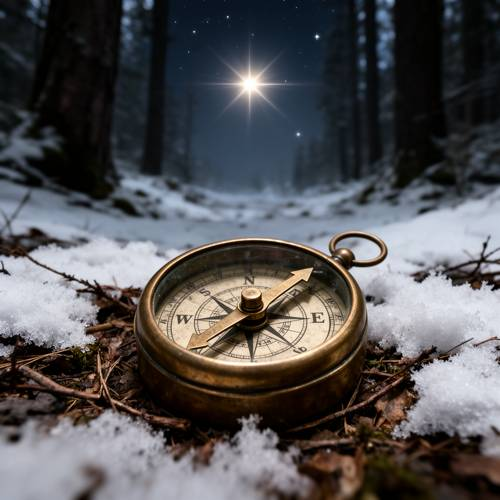
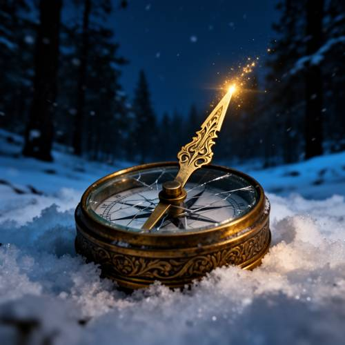

Compound — Generating picture: An ancient brass compass is abandoned on the snowy
Generating picture: An ancient brass compass is abandoned on the snowy forest floor. Its hands do not point north and south, but point with a glimmer at an invisible star in the sky.

Direct — one call, no iteration

Continuum — Qwen3.8-27B + FLUX.2-dev
Judge — Direct
FAILCompound - Imagination — The prompt describes an imaginative concept: a compass pointing with a glimmer at an invisible star. In the image, a compass is pointing towards a star in the sky. However, this star is not invisible; it is depicted as the brightest object in the sky, serving as a focal point. Additionally, there is no discernible glimmer emanating from the hands of the compass itself. The glimmer is associated with the star in the sky.
FAILLogical Reasoning — The prompt requires several logical conditions: an ancient brass compass on a snowy forest floor, with hands that do not point north/south but instead point to an invisible star. The image shows an ancient-looking brass compass on a snowy forest floor. However, the compass hands are pointing towards the 'N' on the compass rose, indicating it is pointing north, which contradicts the prompt's instruction. Furthermore, the hands point towards a very bright and visible star, not an invisible one as specified.
Judge — Continuum
PASSCompound - Imagination — The image depicts a compass with its primary hand angled upwards, pointing towards the sky. The tip of this hand emits a bright golden light and sparkling particles, which represents a 'glimmer'. The sky in the direction it points is dark and devoid of visible stars, thus it is pointing at an 'invisible star'.
PASSLogical Reasoning — The image displays an ornate brass compass with a weathered appearance, consistent with being 'ancient'. It rests partially buried in snow on the ground of a forest, and its glass is cracked, which aligns with being 'abandoned on the snowy forest floor'. The main hand of the compass is angled upwards towards the sky instead of lying flat and pointing north-south. This hand glows at the tip, visually indicating it is pointing with a glimmer at an 'invisible star' in the sky.
What the agent did
Thinking
The user is asking for an image: "An ancient brass compass is abandoned on the snow-covered forest floor. Its needle does not point north and south, but glitters and points to a star that is invisible in the sky." This is a surreal/fantasy scene: a brass compass on the snow, the needle pointing upward/sideways toward the sky (not the flat north-south orientation), with a glimmer suggesting a star. "A star that is invisible in the sky" — that is, the needle points at the place where the star should be, but the star itself is invisible (or faintly visible as a glimmer). The compass should be tilted/standing upright? If the needle points to a star in the sky, it might be good to have the compass stand up at an angle on the snow, with the needle tilted upward, and a faint point of light/glow in the sky where it's pointing. Let's generate the initial image with flux2-dev. Prompt: cinematic scene, an ancient brass compass standing at an angle on the snow-covered forest floor at dusk, mossy lichen on the aged brass, the compass face cracked, the gilded needle tilted upward toward the open sky, a faint pinpoint of light at the tip of the needle, a soft glow, snowy ground, blurred dark pine forest background, winter blue and warm brass tones. Wait — "its needle does not point north and south, but glitters and points to a star that is invisible in the sky" — the needle is tilted upward, pointing at the sky. The star is "invisible" — so probably there's no visible star, just a glimmer of light on the tip of the needle where the star should be. I'll include a faint shimmer of light on the needle, with the sky dark and empty (no visible star). Let's generate at an appropriate size — default 1024x1024. Landscape might be better for a forest scene, but the size is fixed by the harness... Actually, the generate_image width/height defaults are 1024. The notes say "the image size is fixed for comparison" — the harness controls the size. Use default 1024x1024? A vertical composition might suit the upward-pointing needle better. But since the harness controls it, leave it at default. Actually I can specify width/height in the generate_image call. The notes say "do not set the seed. The size and seed are controlled by the harness." So leave the size at default. Let's write the prompt: "A close-up cinematic shot of an ancient brass compass abandoned on a snow-covered forest floor. The old, tarnished brass case with engraved patterns, the cracked glass face, the ornate gilded needle tilted upward at an angle, pointing toward the dark winter night sky, a soft golden glimmer of light emanating from the tip of the needle where no visible star exists — an empty dark sky. Snow around the compass, dark pine trees softly out of focus in the background, blue moonlight and warm glimmer contrasting. Photorealistic, shallow depth of field, moody, mysterious, magical realism." After that, inspect and edit. Alright, let's make the first call.
Step 1 — `generate_image`
{
"model": "flux2-dev",
"prompt": "Cinematic close-up of an ancient brass compass abandoned on a snowy forest floor. The compass is old and tarnished, ornate engraved brass case with cracked glass face, partially buried in a drift of soft snow. Its ornate gilded needle is tilted dramatically upward at a steep angle, pointing into the dark winter night sky above \u2014 not lying flat on the dial. A faint shimmering golden glimmer emanates from the needle's tip, as if catching light from an invisible star; the sky itself is empty and starless, deep blue-black. Surrounding dark pine forest softly out of focus, falling snow, cold blue moonlight contrasting with the warm golden glimmer on the brass. Photorealistic, shallow depth of field, moody, mysterious, magical realism."
}
Result img_0
Thinking
The image is actually quite good. An antique brass compass sits on the snow, and its ornate gold needle is lifted up and pointing to the sky, with a sparkling point of light at the tip. The sky is a starless deep blue. Snow is falling. The compass is old brass with an engraved case, and the glass face is cracked. Issues to check: 1. Is the needle "pointing to a star invisible in the sky"? — Yes, it's tilted upward and sparkling at the tip, and the sky is empty. 2. Does the compass look "ancient"? — It looks like brass with an engraved case. The face is cracked — an old, abandoned feel. Good. 3. The needle appears to be lifted off the pivot and standing upward — a physically impossible but magical/surreal effect, which is exactly what the prompt is asking for. Let me zoom in on the compass face and the needle to check the details. I'll inspect the compass dial and the tip of the needle. Actually, the result already pretty strongly matches. Let me look at the details: the compass face has the card and the cracked glass. The needle is a decorative gold needle pointing to the upper right, with a sparkling starburst at the tip. The sky in the upper right is a dark blue with no visible stars — "an invisible star" is good. One thing: the tip of the needle is in the upper right, and there's a glow there — it looks like a spark/point of light. This could perhaps be read as a visible star. The prompt says "glitters to point to a star invisible in the sky" — the glimmer is on the needle, and the star is invisible. The current image shows the glow as being at the tip of the needle, which reads as the glimmer of the needle's tip. This works. Let me inspect the region to verify the quality — the dial markings and the base of the needle. I'll do a quick check with inspect_region on the compass face.
The compass dial looks good—cracked glass, old map dial, and brass case with engraved details. The sky is a deep blue with no stars, which matches the "invisible star" description. The overall composition matches the prompt: - Ancient brass compass on the snow-covered forest floor ✓ - The needle points not horizontally (not north/south) but upward toward the sky ✓ - Glittering at the tip of the needle ✓ - The star is invisible—the sky is empty ✓ - Forest, snow, and falling snowflakes ✓ This is a good result. I'll mark this as the best and stop. Good enough is the stopping condition—every element is present.
Model
This image matches the brief on all the key points: the antiquated, engraved brass compass half-buried in snow, the cracked glass face, the decorative golden needle tilted upward out of the dial (rather than lying flat pointing north–south), a faint golden shimmer at the tip of the needle, and a deep blue starless sky — the star remains invisible, and only the shimmer hints at it. The surrounding snowy pine forest and drifting snow complete the scene. Marking this as the best result.
Step 4 — `mark_best`
{
"image": "img_0",
"reason": "All prompt elements present: ancient brass compass on snowy forest floor, needle tilted upward toward the sky with a glimmer at its tip, star invisible (empty dark sky), moody cinematic atmosphere. Detail inspection of the compass face and sky confirmed quality."
}
Thinking
I've marked the image as the best one. The task is complete. All the requested elements are present. I'll stop here and tell the user.
Model
Done. The final image shows an ancient brass compass abandoned in a drift of snow on a winter forest floor at night. Its ornate gilded needle is tilted steeply upward out of the cracked dial face — refusing north and south — and at its tip a small golden glimmer shimmers against an empty, starless blue sky, hinting at the invisible star it's pointing at. Falling snow and dark, out-of-focus pines frame the scene. The result is marked as the best and ready to return.